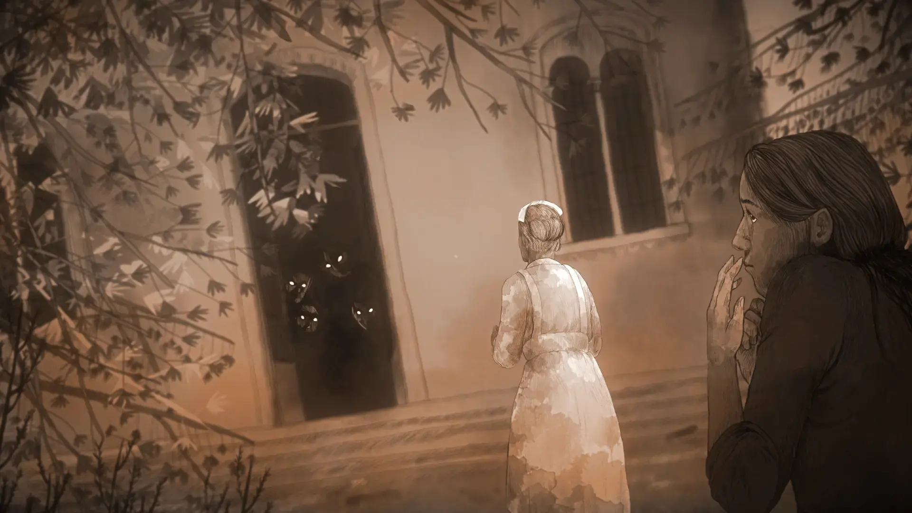

▌ DESCUBRA JOGOS OCULTOS
🎮 Jogos Indies Impactantes
Explore o mundo sombrio e mágico dos Indies, onde há pérolas escondidas do universo dos games.
💿 Lore
CHEGOU!!! A Seção Lore aqui no site! Onde contamos Histórias de Jogos Incríveis e Extraordinários. Dê uma conferida.
👾 Pixel Art
Logo teremos uma sessão para a Pixel Art da galera que acompanha aqui o site.

Drakantos: onde cada missão vira história e cada jogador vira lenda.

O Jogo Que Foi Apagado das Lojas — e Nunca Deveria Ser Esquecido

A recriação do manicômio é assombrosamente detalhada. Tudo foi baseado em documentos históricos.